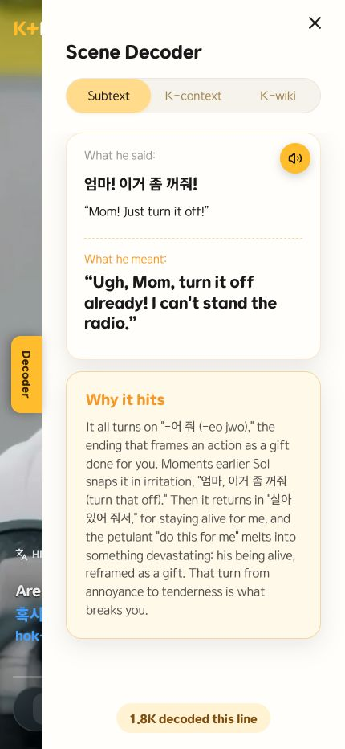
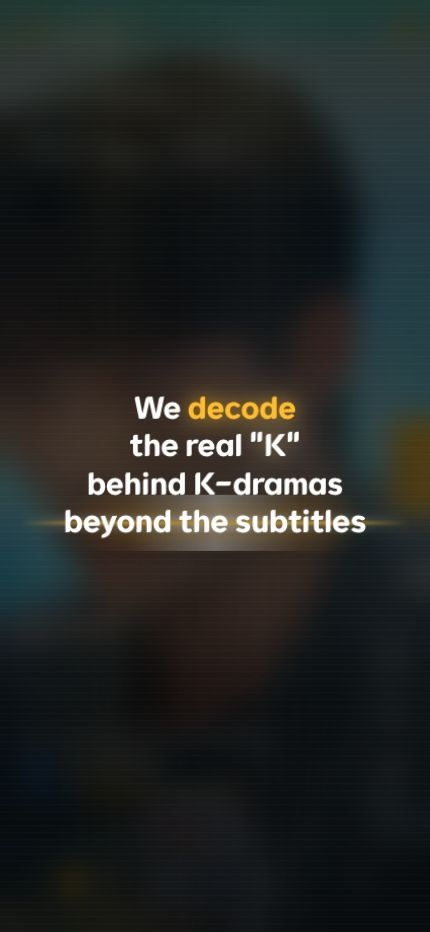
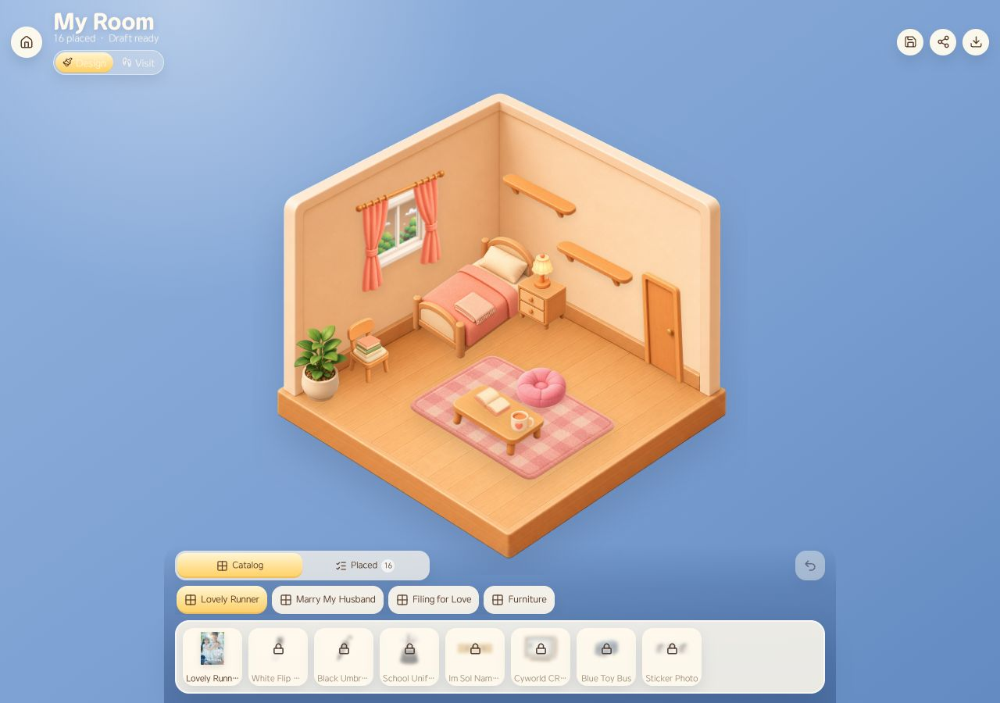
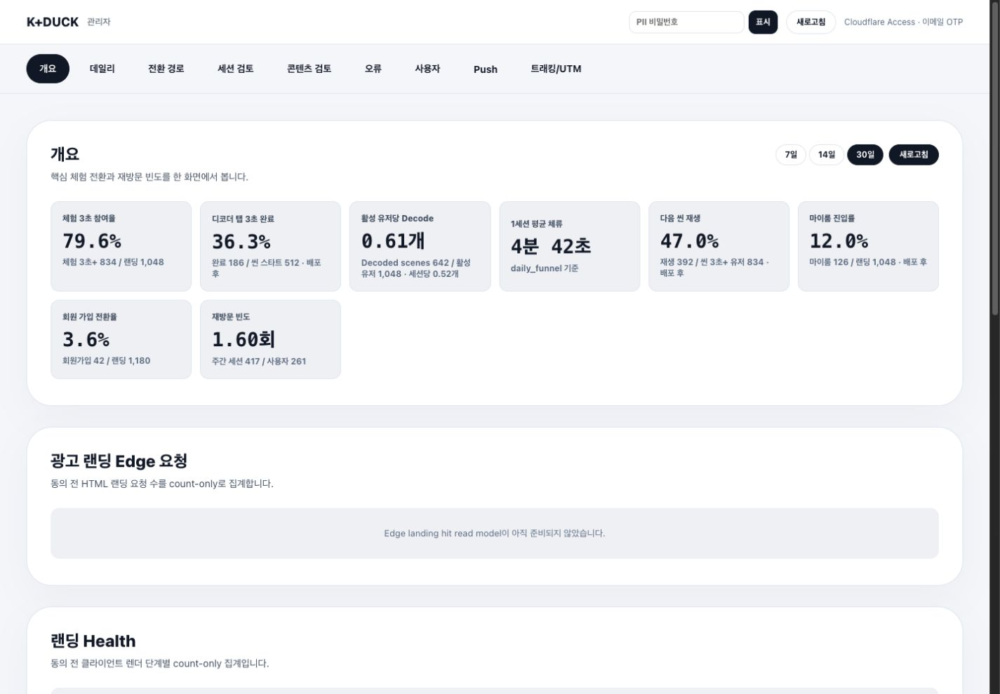
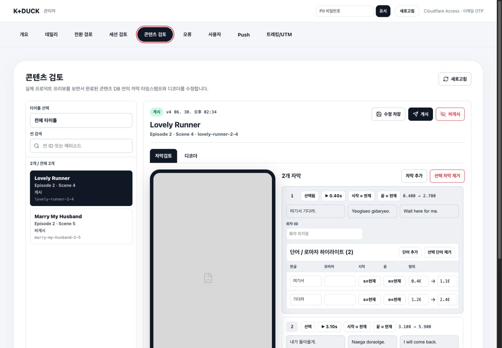
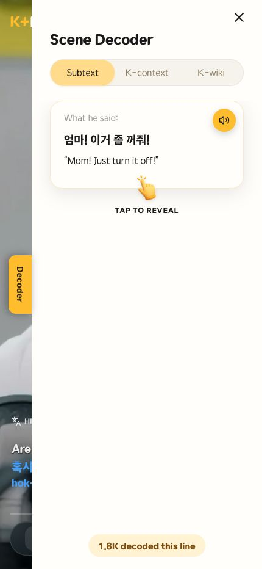
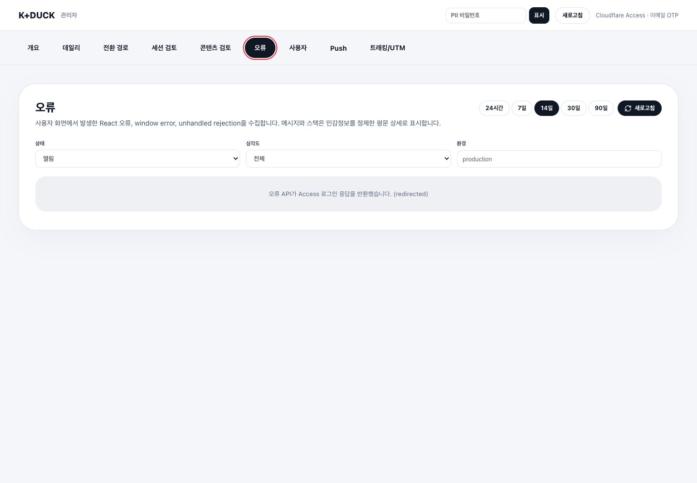
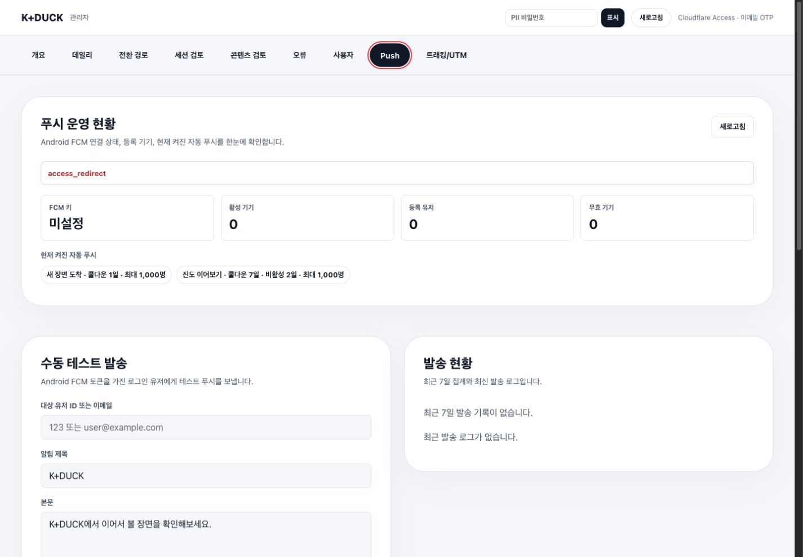
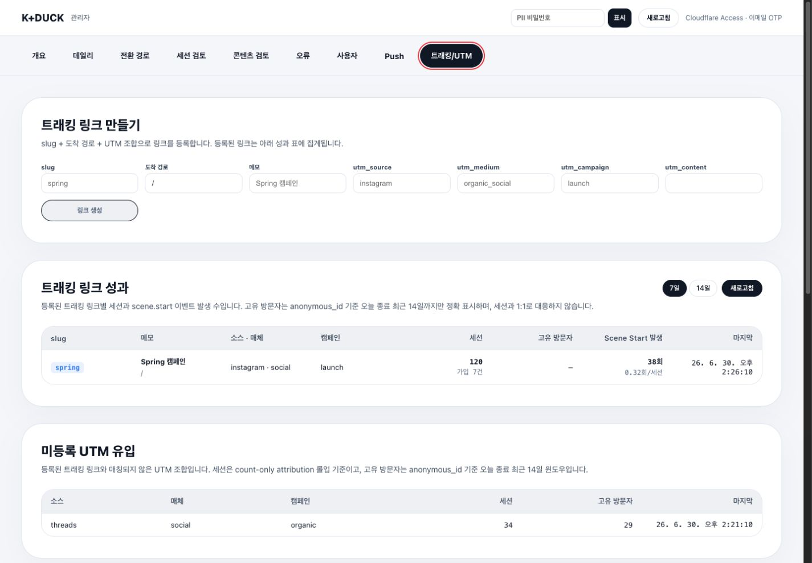

UX Discovery
영상 중 decoder가 완전히 사라지는 문제
재생 중 UI를 다 숨기면 몰입감은 좋아지지만 핵심 기능을 발견하기 어렵습니다. 그래서 노란 pin sliver만 남기고, 화면 터치로 UI가 보일 때는 pin이 더 나오며, 스와이프하면 panel이 함께 열리도록 상태를 나눴습니다.
K-drama 숏폼 장면을 보면서, 자막 너머의 진짜 의미를 디코딩하는 vertical learning service.
이 포트폴리오는 K+DUCK Home 프로젝트에서 제가 실제로 구현한 public app UX, Scene Decoder, My Room 리텐션, admin console, analytics pipeline, push automation, security boundary를 하나의 case study로 정리한 제출용 문서입니다.

K+DUCK Home은 K-drama 숏폼 장면 위에 자막, 실제 뉘앙스, 한국 문화 맥락, 장면 trivia를 얹어 학습 경험으로 바꾸는 서비스입니다. 저는 public app, admin console, Cloudflare 기반 API/DB/Worker 흐름을 함께 다루며 제품이 사용자에게 보이는 표면과 운영자가 관리하는 뒷면을 동시에 구현했습니다.
포트폴리오 레퍼런스에서 공통적으로 보이는 강점은 “무엇을 만들었는지”를 긴 설명보다 먼저 화면으로 증명하는 점이었습니다. 그래서 핵심 사용자 흐름과 운영 화면을 새로 캡처해 한 눈에 볼 수 있게 구성했습니다.




K+DUCK의 핵심 기능은 영상 위에 얹히기 때문에, UI를 많이 보여주면 몰입이 깨지고 UI를 모두 숨기면 decoder를 발견하기 어렵습니다. 이 균형을 맞추기 위해 스플래시, decoder coach copy, pin sliver, swipe panel의 상태를 반복적으로 다듬었습니다.

영상 재생 중에는 UI를 최대한 숨기되, 우측 가장자리에 아주 얇은 노란 pin만 남겼습니다. 사용자가 화면을 터치해 UI가 보이는 상태가 되면 pin이 더 자연스럽게 나오고, 노란 영역을 스와이프하면 panel까지 함께 따라 나옵니다.
첫 화면은 단순 로고 대신 “We decode the real K behind K-dramas beyond the subtitles”라는 제품 문장을 중심에 두고, decode 단어만 노란색으로 강조했습니다. 정적인 온보딩 대신 scan beam과 질감으로 “해석한다”는 제품 정체성을 바로 보여줍니다.
README와 architecture 문서 기준으로 K+DUCK Home은 MVP2와 DB, admin, analytics, session, private media 리소스를 공유하지 않는 독립 서비스입니다. public app과 admin app은 Pages project/branch/domain을 분리하고, D1도 core/analytics/content로 책임을 나눴습니다.
세로형 영상 피드, 자막, decoder, My Room, profile/legal/notification UX를 담당합니다.
auth, content, analytics, avatar, landing health, client error ingest 같은 API layer를 처리합니다.
운영 지표, 콘텐츠 검수, 오류, 사용자, Push, UTM을 Cloudflare Access 뒤에서 관리합니다.
identity, guest state, progress, saved scenes, private media pointer, push state를 저장합니다.
daily counter, visitor, session funnel, admin audit, client errors, tracking links를 분리 저장합니다.
raw event firehose, private uploads, scheduled retention, push automation을 담당합니다.
실서비스에서 문제는 화면보다 경계에서 자주 생깁니다. public app과 admin console을 같은 프로젝트에 섞지 않고, MVP2의 기존 DB나 private media에 쓰지 않도록 차단한 이유도 이 때문입니다. 특히 content DB는 preview와 production binding을 분리하고, deploy preflight로 실수 가능성을 줄였습니다.
K+DUCK은 콘텐츠형 서비스라서 “좋은 화면”만으로는 부족합니다. 운영자는 어떤 장면에서 decoder가 열리는지, 어떤 UTM이 유입을 만드는지, 어느 client error가 자주 발생하는지, Push rule이 켜져 있는지 빠르게 확인해야 합니다.



자막, romanized word, decoder JSON을 코드가 아니라 admin review panel에서 다룰 수 있도록 만들었습니다. 실제 모바일 미리보기와 편집 UI가 함께 있으므로, 운영자는 사용자가 볼 화면을 기준으로 수정 판단을 할 수 있습니다.
Android FCM 키 설정, 활성/무효 기기, 자동 Push rule, 수동 테스트 발송, 최근 발송 로그를 한 화면에서 확인하도록 구성했습니다. scheduled worker는 rule과 user state를 읽어 후보를 선정합니다.
이 프로젝트에서 가장 기술적으로 깊게 정리한 부분은 analytics writer입니다. 이전 MVP에서 단일 D1 DB가 커지는 문제를 겪었다는 전제를 두고, raw event, session funnel, daily rollup의 저장 위치를 분리했습니다.
product/action batch를 R2에 먼저 저장해, D1 write가 실패하더라도 재처리할 원본을 남깁니다.
batch id와 SHA-256 guard로 같은 payload retry는 no-op 처리하고, 다른 payload overwrite는 차단합니다.
event row를 무한히 쌓는 대신 session별 stage timestamp로 funnel을 압축해 저장합니다.
Admin API는 콘텐츠, 사용자, Push, tracking link를 다루기 때문에 화면보다 요청 경계가 중요합니다. 공통 `requireAdmin` layer에서 Access JWT, allowlist, role, CSRF, audit를 통과하지 않으면 요청이 진행되지 않도록 구성했습니다.
`jose.createRemoteJWKSet`로 Cloudflare Access JWT를 검증하고 issuer/audience/exp/nbf를 확인합니다.
admin_allowlist의 email/role을 기준으로 viewer/admin/owner 권한을 나눕니다.
write path는 X-CSRF, Origin, Sec-Fetch-Site를 검사하고 denial/action audit를 남깁니다.
avatar upload에서는 확장자만 믿지 않고 magic-byte sniffing으로 이미지 타입을 확인합니다. private R2에 object를 저장하고, 현재 avatar pointer만 DB에 유지하며 이전 object를 정리하는 방식으로 보관 범위도 줄였습니다.
재생 중 UI를 다 숨기면 몰입감은 좋아지지만 핵심 기능을 발견하기 어렵습니다. 그래서 노란 pin sliver만 남기고, 화면 터치로 UI가 보일 때는 pin이 더 나오며, 스와이프하면 panel이 함께 열리도록 상태를 나눴습니다.
모든 이벤트를 D1에 row 단위로 쌓으면 DB 파일이 계속 커지는 문제가 생길 수 있습니다. raw는 R2, session funnel은 별도 D1, daily rollup은 analytics D1로 나누고 retention worker를 둬 구조적으로 해결했습니다.
지표 조회뿐 아니라 콘텐츠 수정, Push 발송, tracking link 생성이 가능한 콘솔이기 때문에 Access JWT만으로 충분하지 않다고 판단했습니다. allowlist, role, CSRF, audit를 공통 gate로 묶어 fail-closed 흐름을 만들었습니다.
자막/decoder 데이터와 실제 모바일 화면이 분리되어 있으면 운영자가 수정 결과를 상상해야 합니다. 그래서 review panel에 모바일 preview와 편집 UI를 함께 배치해, 사용자가 보는 화면 기준으로 콘텐츠 품질을 판단하게 만들었습니다.
K-drama 숏폼 장면에 자막, 문화 맥락 decoder, 수집형 My Room, 운영 어드민, analytics/push pipeline을 결합한 K+DUCK vertical learning platform을 React/TypeScript와 Cloudflare stack으로 구현.